지적산업기사 (2020-06-06 기출문제)
1과목: 지적측량
1. 다음 중 지적공부를 정리할 때에 검은색으로 제도하여야 하는 것은?
- 경계의 말소선
- 일람도의 철도용지
- 일람도의 지방도로
- 도곽선 및 도곽선 추치
(정답률: 74%)

2. 지적측량성과와 검사성과의 연결교차의 허용범위 기준으로 옳은 것은?
- 지적삼각점:0.10m 이내
- 지적삼각보조점:0.20m 이내
- 지적도근점(경제점좌표등록부 시행지역):0.20m 이내
- 경계점(경계점좌표등록부 시행지역):0.10m 이내
(정답률: 68%)
3. 지상 경계를 결정하는 기준에 관한 설명으로 옳지 않은 것은?
- 토지가 해면 또는 수면에 접하는 경우:평균 해수면
- 연접되는 토지 간에 높낮이 차이가 있는 경우:그 구조물 등의 하단부
- 도로ㆍ구거 등의 토지에 절토(切土)된 부분이 있는 경우:그 경사면의 상단부
- 공유수면매립지의 토지 중 제방 등을 토지에 편입하여 등록하는 경우:바깥쪽 어깨부분
(정답률: 80%)
4. 지적도근점측량에서 배각법으로 다음과 같이 관측하였을 때 교차각은?
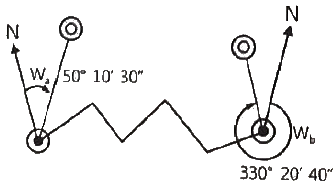
- 20°31‘10“
- 79°49‘50“
- 100°10‘10“
- 280°10‘10“
(정답률: 52%)
5. 평판측량방법으로 세부측량을 하는 때에 측량기하적의 표시사항으로 옳지 않은 것은?
- 측정점의 방향선 길이는 측정점을 중심으로 약 1cm로 표시한다.
- 방위표정에 사용한 기지점 등에는 방향선을 긋고 실측한 거리를 기재한다.
- 측량자는 직경 1.5mm 이상 3mm 이하의 검은색 원으로 평판점을 표시한다.
- 방위표정에 사용한 기지점의 표시에 있어 검사자는 1변의 길이가 2~4mm의 삼각형으로 표시한다.
(정답률: 58%)
6. 다음과 같은 삼각형 모양 토지의 면적(F)은?
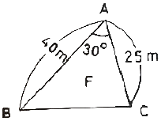
- 200m2
- 250m2
- 450m2
- 500m2
(정답률: 79%)
7. 지적측량 시행규칙에 따른 지적측량의 방법으로 옳지 않은 것은?
- 세부측량
- 일반측량
- 지적도근점측량
- 지적삼각점측량
(정답률: 78%)
8. 경위의측량방법에 의한 지적도근점의 연직각을 관측하는 경우에 올려본 각과 내려본 각을 관측하여 그 교차가 최대 얼마 이내인 때에 그 평균치를 연직각으로 하는가?
- 30초
- 60초
- 90초
- 120초
(정답률: 63%)
9. 축척 600분의 1 지적도를 기초로 도곽의 규격이 동일한 축척 3000분의 1의 새로운 지적도 1매를 제작하기 위해서 필요한 축척 600분의 1 지적도의 매수는?
- 5매
- 10매
- 20매
- 25매
(정답률: 82%)
10. 다음 그림에서 DC 방위각은?
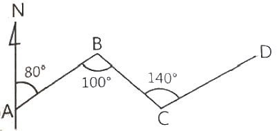
- 120°
- 300°
- 340°
- 350°
(정답률: 59%)
11. 교회법에 의한 지적삼각보조점측량에서 2개의 삼각형으로부터 계산한 위치의 연결교차 값의 한계는?
- 0.30m 이하
- 0.40m 이하
- 0.50m 이하
- 0.60m 이하
(정답률: 62%)
12. 두 점의 좌표가 아래와 같을 때 AB방위각 VBA의 크기는?
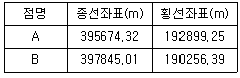
- 50°36‘08“
- 61°36‘08“
- 309°23‘52“
- 328°23‘52“
(정답률: 54%)
13. 배각법에 의한 지적도근점측량에서 도근점간 거리가 102.37m일 때 각관측치 오차조정에 필요한 변장 반수는?
- 0.1
- 0.9
- 1.8
- 9.8
(정답률: 43%)
14. 축척 1/1200 지역에서 도곽선의 지상거리를 측정한 결과 각각 399.5m, 399.5m, 499.4m, 499.9m일 때 도곽선의 보정계수는 얼마인가?
- 1.0020
- 1.0018
- 1.0030
- 1.0025
(정답률: 34%)
15. 지적삼각점의 게산을 진수를 사용하여 계산할 때 진수의 계산단위에 대한 기준으로 옳은 것은?
- 4자리 이상
- 5자리 이상
- 6자리 이상
- 7자리 이상
(정답률: 66%)
16. 전파기측량방법에 따라 다각망도선법으로 지적삼각보조점측량을 할 때에 “1도선”의 의미를 가장 올바르게 설명한 것은?
- 교점과 교점간만을 말한다.
- 기지점과 교점간만을 말한다.
- 기지점과 기지점간만을 말한다.
- 기지점과 교점간 또는 교점과 교점간을 말한다.
(정답률: 74%)
17. 가구 정점 P의 좌표를 구하기 위한 길이 ℓ은? (단,
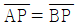
, L=10m, θ=68°)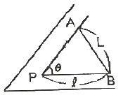
- 5.39m
- 6.03m
- 8.94m
- 13.35m
(정답률: 63%)
18. 다음 중 지적세부측량의 시행 대상이 아닌 것은?
- 경계복원
- 신규등록
- 지목변경
- 토지분할
(정답률: 68%)
19. 지적기준점의 제도 방법으로 옳지 않은 것은?
- 지적도근점 및 지적도근보조점은 직경 1mm의 원으로 제도한다.
- 1등 및 2등삼각점은 직경 1mm, 2mm 및 3mm의 3중원으로 제도한다. 이 경우 1등삼각점은 그 중심원 내부를 검은색으로 엷게 채색한다.
- 3등 및 4등삼각점은 직경 1mm, 2mm의 2중원으로 제도한다. 이 경우 3등삼각점은 그 중심원 내부를 검은색으로 엷게 채색한다.
- 지적삼각점 및 지적삼각보조점은 직경 3mm의 원으로 제도한다. 이 경우 지적삼각점은 원 안에 십자선을 표시하고, 지적삼각보조점은 원 안에 검은색으로 엷게 채색한다.
(정답률: 61%)
20. 강재 권척이 기온의 상승으로 늘어났을 때 측정한 거리는 어떻게 보정해야 하는가?
- 가해도 좋고 감해도 좋다.
- 보정을 필요로 하지 않는다.
- 측정치보다 많아지도록 보정한다.
- 측정치보다 적어지도록 보정한다.
(정답률: 68%)
2과목: 응용측량
21. 곡선반지름이 500m인 원곡선 위를 60km/h로 주행할 때에 필요한 캔트는? (단, 궤간은 1067mm이다.)
- 6.⑤mm
- 7.84mm
- 60.5mm
- 78.4mm
(정답률: 40%)
22. 항공사진 판독의 요소와 거리가 먼 것은?
- 음영(shadow)과 색조(tone)
- 질감(trxture)과 모양(pattern)
- 크기(size)와 형상(shape)
- 축척(scale)와 초점거리(focal distance)
(정답률: 59%)
23. GNSS 측량에서 발생하는 오차가 아닌 것은?
- 위성 시계 오차
- 위성 궤도 오차
- 대기권 굴절 오차
- 시차(視差)
(정답률: 70%)
24. 1:25000 지형도의 주곡선 간격은?
- 5m
- 10m
- 15m
- 20m
(정답률: 65%)
25. 지형측량에 의거하고 지표의 지형ㆍ지물을 도면에 표현하는 기호의 형태와 선의 종류 등을 결정하는데 필요한 도식과 기호의 조건으로 가장 거리가 먼 것은?
- 도식과 기호는 될 수 있는 대로 그리기 용이하고 간단하여야 한다.
- 도식과 기호는 표현하려는 지형ㆍ지물이 쉽게 연상할 수 있는 것이어야 한다.
- 도식과 기호는 표현하려는 물체의 성질과 중요성에 따라 식별을 쉽게 하여야 한다.
- 지형ㆍ지물의 표현을 도상에서는 문자를 제외한 기호로서만 표현하여야 한다.
(정답률: 72%)
26. 초점거리 20cm의 카메라로 표고 150m의 촬영기준면을 사진축척 1:10000로 촬영한 연직사진 상에서 표고 200m인 구릉지의 사진축척은?
- 1:9000
- 1:9250
- 1:9500
- 1:9750
(정답률: 38%)
27. 고속차량이 직선부에서 곡선부로 진입할 때 발생하는 횡방향 힘을 제거하여,, 안전하고 원활히 통과할 수 있도록 곡선부와 직선부 사이에 설치하는 선은?
- 단곡선
- 겹선
- 절선
- 완화곡선
(정답률: 76%)
28. 축척 1:30000으로 촬영한 카메라의 초점거리가 15cm, 사진크기는 18cm×18cm, 종중복도 60%일 때 이 사진의 기선고도비는?
- 0.21
- 0.32
- 0.48
- 0.72
(정답률: 51%)
29. 원곡선 중 단곡선을 설치할 때 접선장(T.L.)을 구하는 공식은? (단, R:곡선반지름, I:교각)
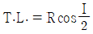
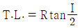
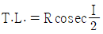
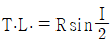
(정답률: 73%)
30. GNSS 항법메시지에 포함되는 내용이 아닌 것은?
- 지구의 자전속도
- 위성의 상태정보
- 전리층 보정계수
- 위성시계 보정계수
(정답률: 57%)
31. 등고선에 대한 설명으로 틀린 것은?
- 주곡선은 지형을 표시하는데 기본이 되는 선이다.
- 계곡선은 주곡선 10개마다 굵게 표시한다.
- 간곡선은 주곡선 간격의 1/2이다.
- 조곡선은 간곡선 간격의 1/2이다.
(정답률: 72%)
32. 노선의 결정에 고려하여야 할 사항으로 옳지 않은 것은?
- 절토의 운반거리가 짧을 것
- 가능한 경사가 완만할 것
- 가능한 곡선으로 할 것
- 배수가 완전할 것
(정답률: 73%)
33. GNSS 측량의 특성에 대한 설명으로 틀린 것은?
- 측점간 시통이 요구된다.
- 야간관측이 가능하다.
- 날씨에 영향을 거의 받지 않는다.
- 전리층 영향에 대한 보정이 필요하다.
(정답률: 64%)
34. 촬영고도 750m에서 촬영한 사진 상에 철탑의 상단이 주점으로부터 70mm 떨어져 나타나 있으며, 철탑의 기복변위가 6.15mm일 때 철탑의 높이는?
- 57.15m
- 63.12m
- 65.89m
- 67.03m
(정답률: 51%)
35. 교호 수준 측량의 성과가 그림과 같을 때 B점의 표고는? (단, A점의 표고는 70m, a1=0.87, a2=1.74m, b1=0.24m, b2=1.07m)
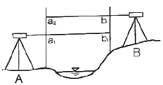
- 50.65m
- 50.85m
- 70.65m
- 70.85m
(정답률: 49%)
36. 지표면에서의 500m 떨어져 있는 두 지점에서 수직터널을 모두 지구 중심방향으로 800m 굴착하였다고 하면 두 수직터널 간 지표면에서의 거리와 깊이 800m에서의 거리에 대한 차는? (단, 지구는 반지름은 6370km의 구로 가정한다.)
- 6.3cm
- 7.3cm
- 8.3cm
- 9.3cm
(정답률: 35%)
37. 수준측량에서 시점의 지반고가 100mn이고, 전시의 총합은 107m, 후시의 총합은 125m일 때 종점의 지반고는?
- 82m
- 118m
- 232m
- 332m
(정답률: 64%)
38. 터널 측량에서 지상의 측량좌표와 지하의 측량좌표를 일치시키는 측량은?
- 터널 내외 연결측량
- 지상(터널 외)측량
- 지하(터널 내)측량
- 지하 관통측량
(정답률: 72%)
39. 삼각점 A에서 B점의 표고값을 구하기 위해 양방향 삼각수준측량을 시행하여 고저각 αA=+2°30'와 αB=-2°13', A점의 기계 높이 iA=1.4m, B점의 기계높이 iB=1.4m, 측표의 높이 hA=4.20m, hB=4.20m를 취득하였다. 이 때의 B점의 표고값은? (단, A점의 높이=325.63m, A점과 B점 간의 수평거리는 1580m이다.)
- 325.700m
- 390.700m
- 419.490m
- 425.490m
(정답률: 35%)
40. 지형의 표시법 중 급경사는 굵고 짧게, 완경사는 가늘고 길게 표시하는 방법은?
- 음영법
- 영선법
- 채색법
- 등고선법
(정답률: 66%)
3과목: 토지정보체계론
41. 인접성(neighborhood)에 대한 설명으로 옳지 않은 것은?
- 폴리곤이나 객체들의 포함 관계를 말한다.
- 서로 이웃하여 있는 폴리곤 간의 관계를 말한다.
- 공간객체 간 상호 인접성에 기반을 둔 분석에 필요하다.
- 정확한 파악을 위해서는 상, 하, 좌, 우와 같은 상대적 위치성도 파악하여야 한다.
(정답률: 55%)
42. 데이터베이스관리시스템의 장ㆍ단점으로 옳지 않은 것은?
- 운용비용 부담이 가중 된다.
- 중앙집약적 구조의 위험성이 높다.
- 데이터의 보안성을 유지할 수 없다.
- 시스템이 복잡하여 데이터의 손실 가능성이 높다.
(정답률: 59%)
43. 지적도 전산화 작업의 목적으로 옳지 않은 것은?
- 대민서비스의 질적 향상 도모
- 지적측량 위치정확도 향상 도모
- 토지정보시스템의 기초 데이터 활용
- 지적도면의 신축으로 인한 원형 보관 관리의 어려움 해소
(정답률: 53%)
44. 데이터베이스의 구축과정으로 옳은 것은?
- 계획→저장→관리ㆍ조작→데이터베이스 정의
- 데이터베이스 정의→계획→저장→관리ㆍ조작
- 저장→데이터베이스 정의→계획→관리ㆍ조작
- 관리ㆍ조작→저장→계획→데이터베이스 정의
(정답률: 57%)
45. 오버슈트(Overshoot), 언더슈트(Undershoot), 스파이크(Spike), 슬리버(Sliver) 등의 발생원인은?
- 기계적인 오차
- 속성자료 입력할 때의 오차
- 입력도면의 평탄성 오차
- 디지타이징 할 때의 오차
(정답률: 68%)
46. 다음 중 토지정보시스템 구성을 위한 내용에 포함될 수 없는 것은?
- 법률자료
- 토지측량자료
- 경영합리와에 관한 자료
- 기술적 시설물에 관한 자료
(정답률: 73%)
47. 4개의 타일(tile)로 분할된 지적도 레이어를 하나의 레이어로 편집하기 위해서 이용하여야 하는 기능은?
- Map join
- Map loading
- Map overlay
- Map filtering
(정답률: 70%)
48. 다음 중 점ㆍ선ㆍ면으로 나타난 도형(객체) 간의 공간성의 상관관계를 의미하는 것은?
- 레이어(layer)
- 속성(attribute)
- 위상(topology)
- 커버리지(coverage)
(정답률: 53%)
49. 공간분석을 위해 여러 지도 요소를 겹칠 때 그 지도 요소 하나하나를 가리키는 것으로, 그 하나는 독립된 지도가 될 수 있고 완성된 지도의 한 부분이 될 수도 있는 것은?
- 점(point)
- 필드(field)
- 이미지(image)
- 커버리지(coverage)
(정답률: 52%)
50. 다음 지도의 유형들 중 관계가 다른 것은?
- 해도
- 지적도
- 지형도
- 토지이용현황도
(정답률: 51%)
51. DXF(Drawing eXchange Format) 파일에 대한 설명으로 옳지 않은 것은?
- ASCⅡ 코드 형태이다.
- 도형표현의 효율성과 자료생성의 용이성을 가진다.
- 대부분의 GIS 소프트웨어에서 변환이 불가능하다.
- CAD자료를 다른 그래픽 체계로 변환한 자료파일이다.
(정답률: 69%)
52. 다음 중 가장 높은 위치정확도로 공간자료를 취득할 수 있는 방법은?
- 원격탐사
- 평판측량
- 항공사진측량
- 토탈스테이션 측량
(정답률: 59%)
53. 지적전산자료의 이용ㆍ활용에 대한 승인권자에 해당하지 않는 자는?
- 시ㆍ도지사
- 지적소관청
- 국토교통부장관
- 국토지리정보원장
(정답률: 69%)
54. 래스터데이터의 압축 기법에 해당하지 않는 것은?
- 사지수형(Quadtree)
- 스파게티(Spaghetti)
- 체인코드(Chain codes)
- 런랭스코드(Run-length codes)
(정답률: 65%)
55. 중첩(overlay)분석에 대한 설명으로 옳지 않은 것은?
- 중첩분석을 발전시키는데 가장 큰 공헌을 한 존 스노(John Snow)는 지역의 환경적 민감성을 평가하기 위해 지도를 중첩하였다.
- 각각 다른 주제도를 중첩하여 두 도면간의 관계를 분석하고 이를 지도학적으로 표현하는 것이다.
- 미국 독립전쟁에서 뉴욕타운 지도 위에 군대의 이동경로를 하나의 레이어로 중첩시킨 것이 최초이다.
- 영국 런던 브로드가 지역에서 발생한 콜레라 사망자의 거주지와 우물의 위치를 지도에 중첩하여 관계성을 분석하였다.
(정답률: 54%)
56. 메타데이터에 대한 설명으로 옳지 않은 것은?
- 사용자들 간의 이해와 데이터 공유를 위해 데이터에 대한 항목을 정의한다.
- 데이터에 대한 정보로서 데이터의 내용, 품질, 조건 및 기타특성에 대한 정보를 포함한다.
- 시간과 관계없이 일관성 있는 데이터를 제공할 수 있으나, 메타데이터를 작성한 실무자가 바뀌면 메타데이터를 재 작성한다.
- 기본적으로 포함하여야 할 요소는 데이터에 대한 개요 및 자료소개, 자료품질, 공간참조, 형상ㆍ속성정보, 정보획득 방법, 참조정보에 관한 항목 등이다.
(정답률: 72%)
57. 토지정보시스템에서 필지식별번호의 역할로 옳은 것은?
- 공간정보에서 기호의 작성
- 공간정보의 자료량의 감소
- 속성정보의 자료량의 감소
- 공간정보와 속성정보의 링크
(정답률: 71%)
58. PBLIS의 개발 내용 중 옳지 않은 것은?
- 지적측량시스템
- 건축물관리시스템
- 지적공부관리시스템
- 지적측량성과 작성 시스템
(정답률: 69%)
59. 고유번호에서 행정구역 코드는 몇 자리로 구성하는가?
- 2자리
- 4자리
- 10자리
- 19자리
(정답률: 56%)
60. 국가공간정보정책 기본계획은 몇 년 단위로 수립ㆍ시행하여야 하는가?
- 매년
- 3년
- 5년
- 10년
(정답률: 66%)
4과목: 지적학
61. 지적불부합지로 인해 야기될 수 있는 사회적 문제점으로 보기 어려운 것은?
- 빈번한 토지분쟁
- 토지거래 질서의 문란
- 주민의 권리 행사 지장
- 확정 측량의 불가피한 급속 진행
(정답률: 65%)
62. 다음의 토지 표시사항 중 지목의 역할과 가장 관계가 없는 것은?
- 사용 목적의 추측
- 초지 형질변경의 규제
- 사용 현황의 표상(表象)
- 구획정리지의 토지용도 유지
(정답률: 59%)
63. 다음 중 토렌스시스템에 대한 설명으로 옳은 것은?
- 미국의 토렌스 지방에서 처음 시행되었다.
- 피해자가 발생하여도 국가가 보상할 책임이 없다.
- 기본이론으로 거울이론, 커튼이론, 보험이론이 있다.
- 실질적 심사에 의한 권원조사를 하지만 공신력은 없다.
(정답률: 77%)
64. 지적제도에 대한 설명으로 가장 거리가 먼 것은?
- 국가적 필요에 의한 제도이다.
- 개인의 권리 보호를 위한 제도이다.
- 토지에 대한 물리적 현황의 등록ㆍ공시제도이다.
- 효율적인 토지관리와 소유권 보호를 목적으로 한다.
(정답률: 52%)
65. 일필지의 경계와 위치를 정확하게 등록하고 소유권의 한계를 밝히기 위한 지적제도는?
- 법지적
- 세지적
- 유사지적
- 다목적지적
(정답률: 69%)
66. 지적공부에 공시하는 토지의 등록사항에 대하여 공시의 원칙에 따라 채택해야 할 지적의 원리로 옳은 것은?
- 공개주의
- 국정주의
- 직권주의
- 형식주의
(정답률: 64%)
67. 고려시대 토지대장 중 타량성책(打量成冊)의 초안 또는 각 관아에 비치된 결세대장에 해당하는것은?
- 전적(田積)
- 도전장(都田帳)
- 준행장(遵行帳)
- 양전장적(量田帳籍)
(정답률: 42%)
68. 기본도로서 지적도가 갖추어야 할 요건으로 옳지 않은 것은?
- 일정한 축척의 도면 위에 등록해야 한다.
- 기본정보는 변동없이 항상 일정해야 한다.
- 기본적으로 필요한 정보가 수록되어야 한다.
- 특정자료를 추가하여 수록할 수 있어야 한다.
(정답률: 69%)
69. 지목에 대한 설명으로 옳지 않은 것은?
- 지목의 결정은 지적소관청이 한다.
- 지목의 결정은 행정처분에 속하는 것이다.
- 토지소유자의 신청이 없어도 지목을 결정할 수 있다.
- 토지소유자의 신청이 있어야만 지목을 결정할 수 있다.
(정답률: 68%)
70. ‘소유권은 신성불가침이며 국가의 권력에 의해서 구속이나 제약을 받지 않는다’는 원칙은?
- 소유권 보장원칙
- 소유권 자유원칙
- 소유권 절대원칙
- 소유권 제한원칙
(정답률: 57%)
71. 토지등록에 있어 직권등록주의에 관한 설명으로 옳은 것은?
- 신규등록 지적소관청이 직권으로만 등록이 가능하다.
- 토지이동 정리는 소유자 신청주의이기 때문에 신청에 의해서만 가능하다.
- 토지의 이동이 있을 때에는 지적소관청이 직권으로 조사 또는 측량하여 결정한다.
- 토지의 이동이 있을 때에는 초지소유자의 신청에 의하여 지적소관청이 이를 결정한다. 다만, 신청이 없을 때에는 지적소관청이 직권으로 이를 조사ㆍ측량하여 결정할 수 있다.
(정답률: 69%)
72. 다음 중 증보도는 어느 것에 해당하는가?
- 지적도이다.
- 지적 약도이다.
- 지적도 부본이다.
- 지적도의 부속품이다.
(정답률: 54%)
73. 실제적으로 지적과 등기의 관련성을 성취시켜주는 토지등록의 원칙은?
- 공시의 원칙
- 공산의 원칙
- 등록의 원칙
- 특정화의 원칙
(정답률: 37%)
74. 지적제도와 등기제도를 서로 다른 기관에서 분리하여 운영하고 있는 국가는?
- 독일
- 대만
- 일본
- 프랑스
(정답률: 64%)
75. 임야조사사업 당시의 재결 기관은?
- 도지사
- 임야심사위원회
- 임시토지조사국
- 고등토지조사위원회
(정답률: 68%)
76. 다음 중 가장 원시적인 제적제도는?
- 법지적(法地籍)
- 세지적(稅地籍)
- 경계지적(境界地籍)
- 소유지적(所有地籍)
(정답률: 75%)
77. 토지표시사항이 변경된 경우 등기촉탄 규정을 최초로 규정한 연도는?
- 1950년
- 1975년
- 1991년
- 1995년
(정답률: 60%)
78. 토지에 지번을 부여하는 이유가 아닌 것은?
- 토지의 특정화
- 물권객체의 구분
- 토지의 위치 추정
- 토지이용 현황 파악
(정답률: 61%)
79. 통일신라시대의 신라장적에 기록된 지목과 관계없는 것은?
- 답
- 전
- 수전
- 마전
(정답률: 58%)
80. 다음 지목 중 잡종지에서 분리된 지목에 해당하는 것은?
- 공원
- 염전
- 유지
- 지소
(정답률: 59%)
5과목: 지적관계
81. 축척변경에 따른 청산금을 산정한 결과 증가된 면적에 대한 청산금의 합계와 감소된 면적에 대한 청산금의 합계에 차액이 생긴 경우 이에 대한 처리 방법으로 옳은 것은?
- 그 측량업체의 부담 또는 수입으로 한다.
- 그 토지소유자의 부담 또는 수입으로 한다.
- 그 지방자치단체의 부담 또는 수입으로 한다.
- 그 행정안전부장관의 부담 또는 수입으로 한다.
(정답률: 69%)
82. 과수류를 집단적으로 재배하는 토지 내의 주거용 건축물 부지의 지목으로 옳은 것은?
- 전
- 대
- 과수원
- 창고용지
(정답률: 60%)
83. 평판측량방법에 따른 세부측량을 할 경우 거리측정단위로 옳은 것은?
- 지적도를 갖춰 두는 지역:1센티미터, 임야도를 갖춰 두는 지역:10센티미터
- 지적도를 갖춰 두는 지역:1센티미터, 임야도를 갖춰 두는 지역:50센티미터
- 지적도를 갖춰 두는 지역:5센티미터, 임야도를 갖춰 두는 지역:10센티미터
- 지적도를 갖춰 두는 지역:5센티미터, 임야도를 갖춰 두는 지역:50센티미터
(정답률: 67%)
84. 지적재조사측량에 따른 경계 확정으로 지적공부상의 면적이 증감된 경우 징수하거나 지급해야 할 금액은?
- 조정금
- 청산금
- 감정평가금
- 손실보상금
(정답률: 58%)
85. 지적업무처리규정에서 정의한 용어의 설명으로 틀린 것은?
- “지적측량파일”이란 측량준비파일, 측량현형파일 및 측량성과파일을 말한다.
- “기지경계선(旣知境界線)”이란 세부측량성과를 결정하는 기준이 되는 기지점을 필지별로 직선으로 연결한 선을 말한다.
- “전자평판측량”이란 토탈스테이션과 지적측량 운영프로그램 등이 설치된 컴퓨터를 연결하여 기초측량을 수행하는 측량을 말한다.
- “측량현형(現形)파일”이란 전자평판측량 및 위성측량방법으로 관측한 데이터 및 지적측량에 필요한 각종 정보가 들어있는 파일을 말한다.
(정답률: 46%)
86. 지적공부에 등록된 사항을 지적소관청이 직권으로 정정할 수 없는 것은?
- 지적측량성과와 다르게 정리된 경우
- 토지이동정리 결의서의 내용과 다르게 정리된 경우
- 지적공부의 작성 또는 재작성 당시 잘못 정리된 경우
- 지적도 및 임야도에 등록된 필지가 위치의 이동이 없이 면적의 증감만 있는 경우
(정답률: 60%)
87. 공간정보의 구축 및 관리 등에 관한 법령상 부지(또는 토지)에 따른 지목의 구분이 올바르게 연결된 것은?
- 철도역사→철도용지
- 갈대밭과 황무지→잡종지
- 경마장과 경륜장→유원지
- 대학교 운동장→체육용지
(정답률: 56%)
88. 지적도의 등록사항으로 틀린 것은?
- 지적도면의 색인도
- 전류부분의 건물표시
- 건축물 및 구조물 등의 위치
- 삼각점 및 지적기준점의 위치
(정답률: 56%)
89. 지적공부의 복구자료에 해당하지 않는 것은?
- 측량 결과도
- 지적공부의 등본
- 토지이용계획 확인서
- 토지이동정리 결의서
(정답률: 57%)
90. 지적도근점측량에서 연결오차의 허용범위 기준으로 옳지 않은 것은? (단, n은 측선의 수평거리의 총 합계를 100으로 나눈 수를 말한다.)
- 1등도선은 해당 지역 축척분모의 1/100√n 센티미터 이하로 한다.
- 2등 도선은 해당 지역 축척분모의 1.5/100√n 센티미터 이하로 한다.
- 1등도선 및 2등도선의 허용기준에 있어서의 축척이 6000분의 1인 지역의 축척분모는 3000으로 한다.
- 1등도선 및 2등도선의 허용기준에 있어서의 경계점좌표등록부를 갖춰 두는 지역의 축척분모는 600으로 한다.
(정답률: 53%)
91. 토지소유자에 관한 등록사항의 정정은 무엇에 의하여 정리하여야 하는가?
- 임야대장 또는 임야도
- 토지대장 또는 지적도
- 법원의 확정판결서 정본
- 등기필증 또는 등기완료통지서
(정답률: 49%)
92. 토지이동에 따른 지적공부 정리를 통하여 폐쇄 또는 말소된 지번을 다시 사용할 수 있는 경우는?
- 분할에 따른 토지이동의 경우
- 등록전환에 따른 토지이동의 경우
- 축척변경에 따른 토지이동의 경우
- 지적공부에 등록된 토지가 바다가 됨에 따른 토지이동의 경우
(정답률: 33%)
93. 토지소유자는 토지를 합병하려면 대통령령으로 정하는 바에 따라 지적소관청에 합병을 신청하여야 한다. 다음 중 토지의 합병을 신청할 수 있는 조건이 아닌 것은?
- 합병하려는 토지의 지목이 같은 경우
- 합병하려는 토지의 지번부여지역이 같은 경우
- 합병하려는 토지의 소유자가 서로 같은 경우
- 합병하려는 토지의 지적도의 축척이 서로 다른 경우
(정답률: 71%)
94. 공간정보의 구축 및 관리 등에 관한 법률상 용어 정의로서 토지의 표시사항에 해당하지 않는 것은?
- 면적
- 좌표
- 토지소유자
- 토지의 소재
(정답률: 59%)
95. 지적전산자료의 수수료에 대한 설명으로 옳지 않은 것은? (단, 정보통신망을 이용하여 전자화폐ㆍ전자결제 등의 방법으로 납부하게 하는 경우는 고려하지 않는다.)
- 지적전산자료를 인쇄물로 제공하는 경우의 수수료는 1필지당 30원이다.
- 공간정보산업협회 등에 위탁된 업무의 수수료는 현금으로 내야 한다.
- 지적전산자료를 시ㆍ도지사 또는 지적소관청이 제공하는 경우에는 현금으로만 납부해야 한다.
- 지적전산자룔를 자기디스크 등 전산매체로 제공하는 경우의 수수료는 1필지당 20원이다.
(정답률: 59%)
96. 동일한 지번부여지역 내 지번이 100, 100-1, 100-2. 100-3으로 되어있고, 100번지의 토지를 2필지로 분할하고자 할 경우 지번 결정으로 옳은 것은?
- 100, 101
- 100, 100-4
- 100-1, 100-4
- 100-4, 100-5
(정답률: 64%)
97. 지적측량의 방법의 설명으로 틀린 것은?
- 위성측량의 방법 및 절차 등에 관하여 필요한 사항은 시ㆍ도지사가 따로 정한다.
- 지적삼각점측량은 위성기준점, 통합기준점, 삼각점 및 지적삼각점을 기초로 하여 경위의측량방법, 전파기 또는 광파기측량방법, 위성측량방법에 따르되, 그 계산은 평균계산법이나 망평균계산법에 따른다.
- 세부측량은 위성기준점, 통합기준점, 지적기준점 및 경계점을 기초로 하여 경위의측량방법, 평판측량방법, 위성측량방법 및 전자평판측량방법에 따른다.
- 지적도근측량은 위성기준점, 통합기준점, 삼각점 및 지적기준점을 기초로 하여 경위의측량방법, 전파기 또는 광파기측량방법, 위성측량방법 및 국토교통부장관이 승인한 측량방법에 따르되, 그 계산은 도선법, 교회법 및 다각망도선법에 따른다.
(정답률: 54%)
98. 지적재조사사업에 따라 지적공부를 새로 작성할 경우 토지이동일은?
- 경계확정일
- 사업완료 공고일
- 사업지구 지정일
- 토지소유자 동의서 징구일
(정답률: 63%)
99. 지적공부의 등록사항에 잘못이 있어 이를 정정함으로 인해 인접 토지의 경계가 변경되는 경우 토지소유자가 정정을 신철할 때 지적소관청에 제출하여야 하는 것은?
- 등기부등본
- 확정판결서 정본
- 측량성과도 및 지적도
- 제출 서류 없이 지적소관청 직권으로 결정
(정답률: 43%)
100. 측척변경위원회에 관한 설명으로 틀린 것은?
- 5명 이상 10명 이하의 위원으로 구성한다.
- 위원의 2분의 1 이상을 토지소유자로 하여야 한다.
- 청산금의 이의신청에 관한 사랑을 심의ㆍ의결한다.
- 위원장은 위원 중에서 시ㆍ도지사가 임명한다.
(정답률: 58%)